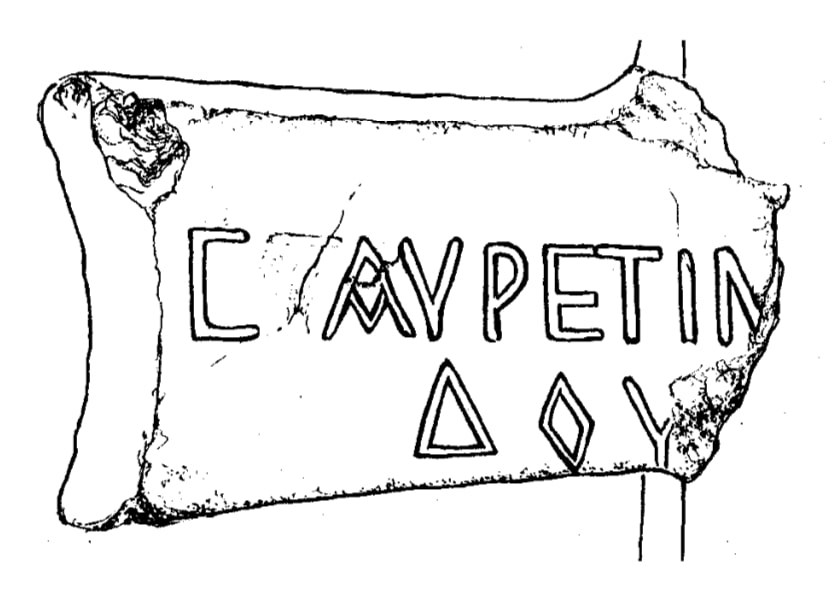

ნოქალაქევის წარწერა
შინაარსი / Summary
შეწირვითი
ბიბლიოგრაფია Bibliography
კრიტიკული გამოცემა Interpretive Edition
C(?ΑΓ)ΑΥΡ. ΕΤΙ (?Μ ან Ν)|| Δ<>Υ Αὐρ[ήλιος] ἐτίμ[ησε]... δού[λου] ან δούλῳ ან δοῦλος C Αὐρ(ήλιος) ἐτίμ ησε ... δού λου
დიპლომატიური გამოცემა Diplomatic Edition
C(?ΑΓ)ΑΥΡΕΤΙ(?ΜᲐᲜΝ)||Δ<>ΥΑΥΡ[ΗΛΙΟΣ]ΕΤΙΜ[ΗΣΕ]ΔΟΥ[ΛΟΥ]ᲐᲜΔΟΥΛΩᲐᲜΔΟΥΛΟΣ C ΑΥΡ ΕΤΙΜ ΗΣΕ ΔΟΥ ΛΟΥ

Stone fragment, Nokalakevi, 2002
{'ka': '... ავრელიოსმა პატივისცა (მოაგო) მონასა (ღმრთისასა).'}
{'default': 'წარწერის მთლიანად აღდგენა არ ხერდხება. შეიძლება გამოითქვას, ვარაუდი, რომ ავრელიოსმა ვიღაცას მიაგო, შესწირა, პატივისცა და ეს ვირაცა არის δοῦλος τοῦ θεοῦ (მონა ღმრთისა). არც ის არის გამორიცხული, რომ ეს \n „მონა ღმერთისა“ თვით ავრელიოსია. ΑΥΡ. შემოკლებული ფორმაა რომაული სახელის Aurelius. სახელი მთლიანი ფორმით გვხვდება I საუკუნის ბერძენ ავტორებთან (მემნონი, პლუტარქე, \n აპიანე, დიონ კასიუსი). სახელი შემოკლებული სახით დადასტურებულია III ს-ის წარწერაში ოლიმპიიდან (M. Guarducci, Epigrafia greca, IV, Roma, 180, fig. 48); მცხეთის ეპიტაფიაში \n IV ს. (თ. ყაუხჩიშვილი, საქართველოს ბერძნული წარწერების კორპუსი, 2009, 256-57); მცხეთის სამშენებლო წარწერაში, რაც ასევე IV ს-ისაა (თ. ყაუხჩიშვილი, საქართველოს \n ბერძნული წარწერების კორპუსი, 2009, 230). ნოქალაქევის ბერძნული წარწერის ასოების მსგავსი მოხაზულობების ასოები გვხვდება ძვ.წ. IV-III სს-შიც და შემდეგაც, ახ.წ. VIს-ში. ნოქალაქევის წარწერის დასათარიღებლად სხვა \n მონაცემებზე მეტად გამოდგება ο (რომბისებური). სხვადასხვა წარწერებში რომბისებური ο-ს გარდა გვხვდება რომბისებური θ-ც. ნოქალაქევის წარწერაში θ საერთოდ არაა, ასეთი რომბისებური \n ο გვხვდება შემდეგ წარწერებში: III ს. ოლვიის წარწერაში (Надписи Ольвии (1917-65)б Л-дю 1968 №48б 166), IV-III სს. ჩრდილოეთ საბერძნეთში (M. Guarducci Epigrafica greca, IV, \n 356. fig. 102 (262-63 წწ.), 361, fig. 103 (IV ს-ის დასაწყისი), IV ს-ის მცხეთის მოგვთა უბანზე მოპოვებულ წარწერაში (თ. ყაუხჩიშვილი, საქართველოს ბერძნული წარწერების კორპუსი, \n 2009, 230), რომაული ხანის წარწერაში ამისოდან (Studia Pontica, Bruxelles, 1910, ed. J. G. C. Anderson, Fr. Cumont, H. Gregoire, 14), 282-83 წწ-ის წარწერაში ნეოკლავდიოპოლისიდან \n (Studia Pontica, Bruxelles, 1910, 86, №67) და სხვ. ამგვარი ο გამოყვანილია ფიჭვნარის გრაფიტოზედაც, რაც დათარიღებულია ძვ.წ. IV ს-ით (მ. ნასიძე, ბერძნული გრაფიტო საქართველოში, თბ., \n 2002, 35 №29. 39, №40). ნოქალაქევის ბერძნული წარწერის ფრაგმენტის დათარიღება ხდება პალეოგრაფიული ნიშნებისა და სავარაუდო აღდგენილი შინაარსის მიხედვით.'}
<div type="edition" xml:lang="ka" ana="mtavruli" xml:space="preserve">
<ab>
<lb n="1"/><w lemma="ქრისტე"><expan><abbr>ქ</abbr><ex>რისტ</ex><abbr>ე</abbr></expan></w>
<w lemma="განსუენება"><expan><abbr>გა</abbr><ex>ნ</ex><abbr>ო</abbr><ex>ჳ</ex><abbr>ს</abbr><ex>უ</ex><abbr>ენე</abbr></expan></w>
<w lemma="სულ">სოჳ<lb n="2" break="no"/>ლსა</w>
<name nymRef="ვაჩა">ვაჩაჲს<lb n="3" break="no"/>ასა</name>
<name nymRef="გურა"><expan><abbr>გო</abbr><ex>ჳ</ex><abbr>რაჲ<lb n="4" break="no"/>სასა</abbr></expan></name>
<name nymRef="მირა"><expan><abbr>მ</abbr><ex>ი</ex><abbr>რა</abbr><ex>ჲ</ex><abbr>ს</abbr><ex>ა</ex><abbr>ს</abbr><ex>ა</ex></expan></name>
</ab>
</div>